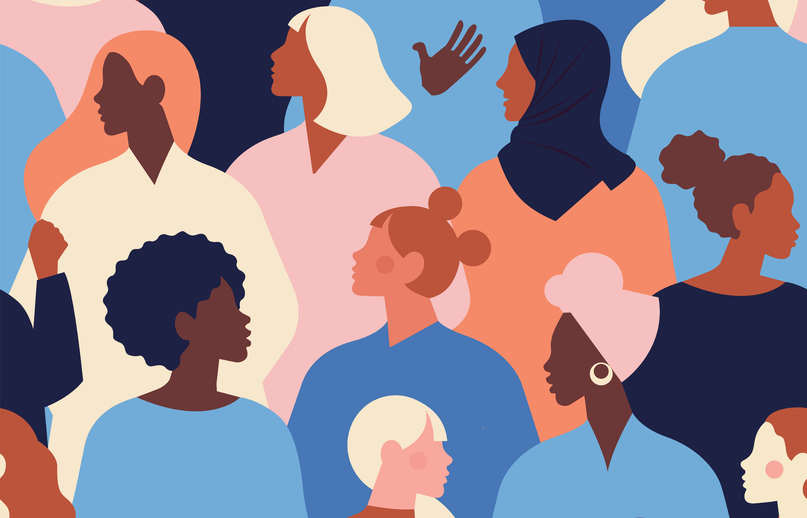
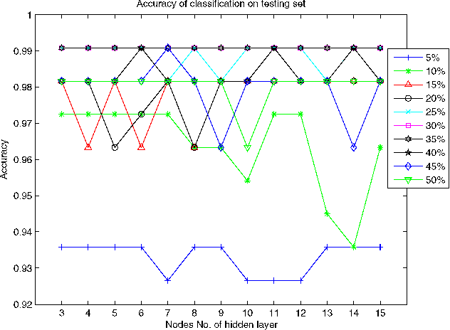
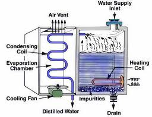

Imádok alkotni, új dolgokat létrehozni. Már kiskoromtól kezdve nagy élményt jelentett számomra az alkotás, hiszen rengeteget legóztam és rajzoltam. Ahogy felnőttem, különböző problémáknak a megoldásában találtam meg az alkotás lehetőségét, sok projectet csinálok magamnak. Például az Egyesült Nemzetek Szervezete által 2015-ben kidolgozott fenntartható fejlődési célok egy-két pontjának továbbgondolása, és azok előadása az Engame Akadémiában vagy például a napenergiával és a mesterséges intelligencia következményeivel kapcsolatban különböző tudományos kutatások elvégzése. Nagyon szeretek alkotni és ötletelni, elméleteket gyártani és építeni.
Nemek közötti egyenlőség
Egy csapattal az Engame Akadémián belül a nemek közötti egyenlőség feltételeit és az ahhoz szükséges feladatokat tanulmányoztuk, lehetséges megoldásokat keresve, nyomatékosítva az elfogadás szerepét. A prezentációnkat más csapatok előtt adtuk elő.
Vízi rakéta
A volt sulimban, a Veres Péter Gimnáziumban egy természettudományi tábor keretei között építettünk egy vízi rakétát.
Fenntartható fejlődés

Az Engame Akadámián bemutattam egy tanulmányozást követően az Egyesült Nemzetek Szervezete által kidolgozott fenntartható fejlődés 17 célját, azon belül kiemelve a szegénység problémáját.
Tudjuk-e mérni a figyelmet?
Egyik barátommal szerettünk volna indulni a Google Science Fair versenyen, amin egy koncentrációt mérő karkötő megépítésével akartunk nevezni. Célunk az emberek eredményességének növelése volt, ám sok számítás után arra jutottunk, hogy ennek megépítését nem tudjuk kivitelezni, karkötő formájában nem lehet megépíteni, nem tudjuk mi alapján mérni a koncentrációt, létrehozni egy átlagos egységet e mérésre, miáltal minden ember tűrőképessége különböző. Tehát, a project nem lett kivitelezve teljesen, csak elméleti szintig jutott.
Hűljünk le és termeljünk vizet könnyedén
Szintén a Google Science Fair versenyen való elindulás céljából terveztünk egy hordozható lepárlót, aminek a célja elsősorban túrázók könnyed és gyors vízhez való hozzájutása, lehűtése volt a nagy melegben. Mielőtt elkezdtünk volna a kivitelezéssel foglalkozni, rájöttünk, hogy nem tudunk akkora energiát hordozva generálni, hogy egy egész testet le tudjon hűteni egy adott meleg környezetben pár percen belül, illetve annyi mennyiségű vízet előállítani, ami elégséges lenne egy kiszáradt túrázó számára tűző napon. Sajnos ez a project se valósult meg.